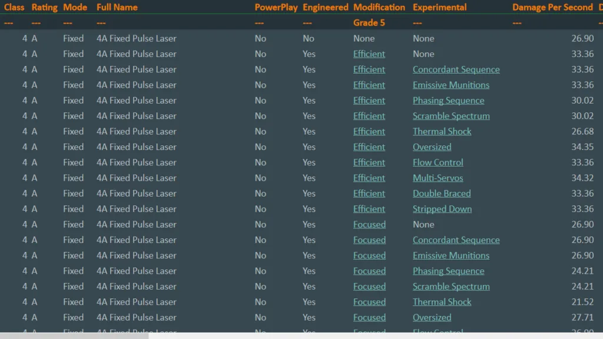

Commander SovereignWinter has compiled a database of ship weapons. The database lists the key parameters, damage, energy, heat, etc. of all 7,090 shipboard weapons of all classes, sizes, types, G5 engineering, and experimental effect combinations to better inform your loadout decisions.
You can visit the sheet at https://canonn.fyi/weapon-sheet
